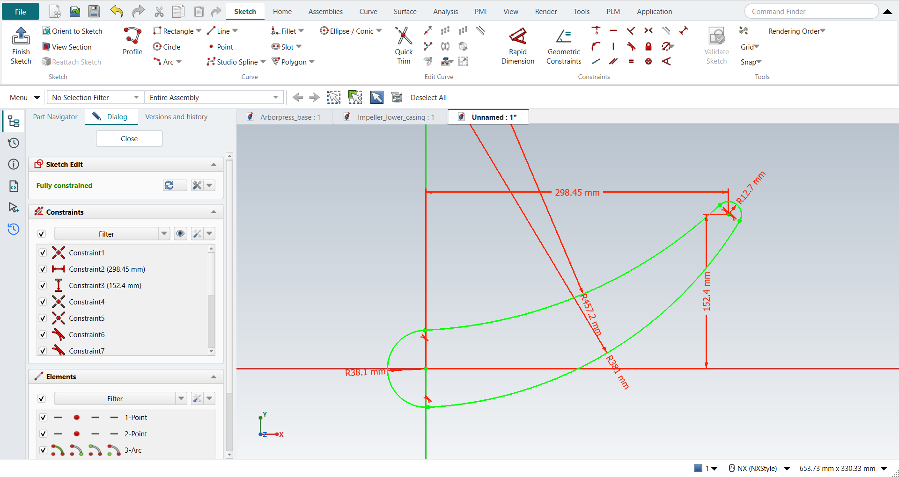

Tutorial AH: Impeller
| Source |
Ming C. Leu, Wenjin Tao, Amir Ghazanfari and Krishna Kolan, NX 12 for Engineering Design (Missouri University of Science and Technology), section 3.5.3. The book’s chapter 4.7.5 models the impeller from this sketch: tutorial AU. |
| You learn |
points at given coordinates, Arc by Center and Endpoints, Arc by 3 Points, tangent arcs, radius dimensions |
| Sizes |
the book’s, in inches, typed in millimetres. The points are at the origin and at (11.75, 6). The end arcs have radii of 1.5 and 0.5; the arcs between them 18 (top) and 15 (bottom). |
Step by step
1. A new part, a sketch and two points
Ctrl+N, then Sketch on the XC-YC plane and MB2. Click Point and click the origin: the point snaps to it. Type the second point’s coordinates in the XC and YC fields beside the pointer, Enter after each: (11.75, 6) in, which is 298.45 and 152.4 mm. FreeCAD keeps the first point Coincident with the origin and the second at its horizontal and vertical distances from the axes.
2. The two end arcs
Press A for Arc (by centre and end points). Click the point at the origin as the centre, then click the arc’s start above it and go round the left side to its end below. Do the same about the second point, round its right side.
3. The two arcs between them
Arc by 3 Points: click the top ends of the two end arcs, then a point between them. Do the same for the bottom ends. In NX-Style, open the Arc drop-down on the Sketch tab and pick Arc From 3 Points (or press A, then M to switch FreeCAD’s Arc to end points and rim point).
4. Tangent, Fixed and the radii
Make each arc Tangent to the next at its end points: four joints. The point at the origin is already fixed, because it is Coincident with the origin. Give the radii, biggest first: 18 and 15 between the ends, 1.5 and 0.5 at the ends.

Ctrl+Q, and save with Ctrl+S.
The replay
| # | In the book (NX) | In FreeCAD NX-Style | Result | Notes |
|---|---|---|---|---|
AH1 |
Create a new file in inches (Impeller_impeller) |
Ctrl+N, Model template |
same |
new document ['Unnamed'] |
AH2 |
Units in the New dialog (the book picks inches) |
metric part kept; book sizes typed in mm |
differs |
FreeCAD sets units in Preferences, not in the New dialog; NXStyle defaults to millimetres (document: Standard (mm, kg, s, °); 25.4 mm shows as 25.40 mm) |
AH3 |
Sketch on the XC-YC plane, OK |
ribbon 'Home › Direct Sketch > Sketch', plane row + MB2 |
same |
picked XY-plane (Base plane) |
AH4 |
Point: one at (0, 0, 0), one at (11.75, 6, 0) |
ribbon 'Sketch › Curve > Point', MB1 on the origin, then XC and YC typed in the on-view fields |
same |
2 points, at (0.0000, 0.0000) and (11.7500, 6.0000) in; FreeCAD keeps typed coordinates as constraints: [['Coincident'], ['DistanceX', 'DistanceY']]; redundant [] |
AH5 |
Arc by Center and Endpoints: R1.5 about the origin point, R0.5 about the other point |
A key, MB1 on the centre point, the start, round to the end, MB2 (twice) |
same |
arcs made; centres on the points True; radii 1.482, 0.526 in (sized below) |
AH6 |
Arc by 3 Points: the top end points, then a point between; the same for the bottom |
ribbon 'Sketch > Arc' dropdown > 'Arc From 3 Points', MB1 on both end points and between, MB2 (twice) |
same |
arcs made [True, True]; 4 of 4 ends snapped to the end arcs |
AH7 |
Constraints: every arc Tangent to the next at its end points |
two arcs + ribbon 'Tangent', 4 times |
same |
4 of 4 joints tangent (0 added); DoF 4 |
AH8 |
The point at the origin: Fixed |
no click needed: the point is Coincident with the origin |
differs |
FreeCAD’s Coincident with the origin already fixes it; Fixed on top would be redundant |
AH9 |
Rapid Dimension: the radii 1.5 and 0.5 at the ends, 18 and 15 between |
arc + ribbon 'Radius / Diameter', the value typed in FreeCAD’s dialog, 4 times |
same |
R18, R15, R1.5, R0.5; DoF 0 ('Fully constrained'); every arc within 1.9e-13 mm of the solved figure (centres, radii, ends) |
AH10 |
Finish Sketch |
Ctrl+Q |
same |
sketch edit ended True |
AH11 |
Save and close the file |
file name given once by script (the system file dialog is not driven); a change, then the Ctrl+S key |
same |
Impeller_impeller.FCStd rewritten by Ctrl+S: the file holds the change and the part is unmodified afterwards (modified before the key: True); FreeCAD format, not .prt |
| Result | Means |
|---|---|
same |
The book’s NX steps work as written. |
differs |
It works, but the FreeCAD way is different; the notes say how. |
limit |
The book’s way fails in FreeCAD itself; a workaround follows in the next steps. |
missing |
FreeCAD has no such function; a stand-in follows. |
skipped |
Not replayed; the notes give the reason. |
FAILED |
Did not work. |
The four arcs are checked against the figure solved from the book’s data. The R18 arc runs outside both end arcs, so its centre is 18 + 1.5 from the origin and 18 + 0.5 from the second point. The R15 arc holds them inside, at 15 - 1.5 and 15 - 0.5.
What differs from NX
-
FreeCAD keeps typed coordinates as constraints (distances from the axes), so the second point is held before any dimension is added.
-
The first point is clicked on the origin, not typed: FreeCAD 1.1.4 gives a point typed at (0, 0) two Coincident constraints with the origin, and the solver flags the second as redundant.
-
FreeCAD’s Fixed keeps a point where it is. The point clicked on the origin is Coincident with it, which already fixes it.